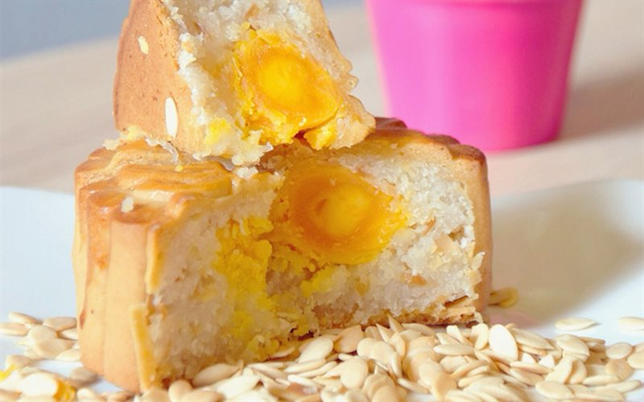
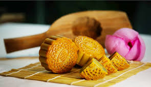
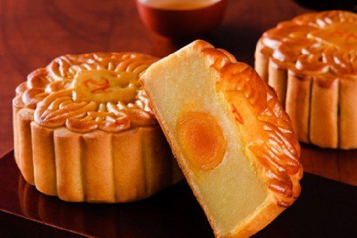
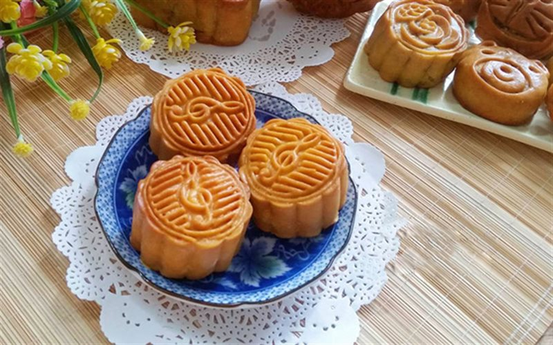

05 loại bánh Trung thu chay dễ làm tại nhà thích hợp với người mới học làm bánh cho Tết Đoàn Viên thêm trọn vẹn
Đăng bởi: Nhóm 05
Ăn chay ngày rằm đã trở thành truyền thống lâu đời của người Việt ta, đặc biệt là rằm tháng Tám. Vì thế, nhu cầu làm bánh trung thu chay càng phổ biến. Với hương vị ngọt ngào, thanh đạm, vẫn mang đậm màu sắc Trung thu, 05 loại bánh trung thu chay nhân ngọt dưới đây sẽ giúp bạn thỏa sức sáng tạo, làm ra những chiếc bánh riêng cho gia đình mình.
1. Bánh trung thu nhân đậu xanh
2. Bánh trung thu nhân đậu đỏ

Loại nhân nhuyễn này rất biết cách bắt vị, vừa nhâm nhi chút bánh, vừa thưởng thức tách trà, mùa Trung thu của bạn sẽ trở nên trọn vẹn hơn bao giờ hết.
3. Bánh trung thu nhân sữa dừa

Bánh trung thu nhân dừa rất dễ làm và nhanh, lại phù hợp với cả bánh dẻo và bánh nướng. Chính vì thế, loại nhân này là sự lựa chọn hàng đầu của những người mới bắt đầu học làm bánh trung thu.
4. Bánh trung thu nhân hạt sen nhãn nhục

Hạt sen thanh mát, nhãn nhục thơm ngọt sẽ tạo nên một chiếc bánh trung thu có 1 không 2 dành tặng riêng cho gia đình bạn, một lần nếm thử sẽ mê mãi không thôi.

5. Bánh trung thu nhân trà xanh

Bánh trung thu nhân trà xanh sẽ có vị đắng thơm của trà, có người thích vị đắng ấy, có người lại không. Vì thế, với loại nhân này, chúng ta có thể tùy thuộc vào khẩu vị của gia đình mà gia giảm lượng bột trà xanh cho vào nhân bánh.
Hi vọng các bạn sẽ thành công với 10 loại bánh trung thu chay nhân ngọt trên. Chúc các bạn có một mùa Tết Đoàn viên ấm cúng và hạnh phúc!
TOP CÁC MÓN NGON

13.400 lượt xem

15.000 lượt xem

23.456 lượt xem

12.202 lượt xem

20.000 lượt xem

10.050 lượt xem
CÁC BÀI VIẾT KHÁC

1999 lượt xem
4 giờ trước

2000 lượt xem
5 giờ trước

1324 lượt xem
7 giờ trước